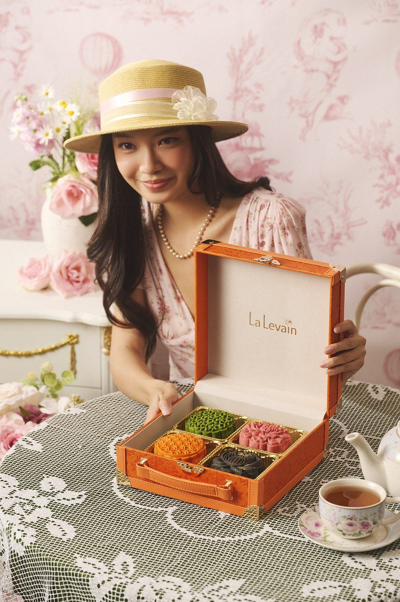
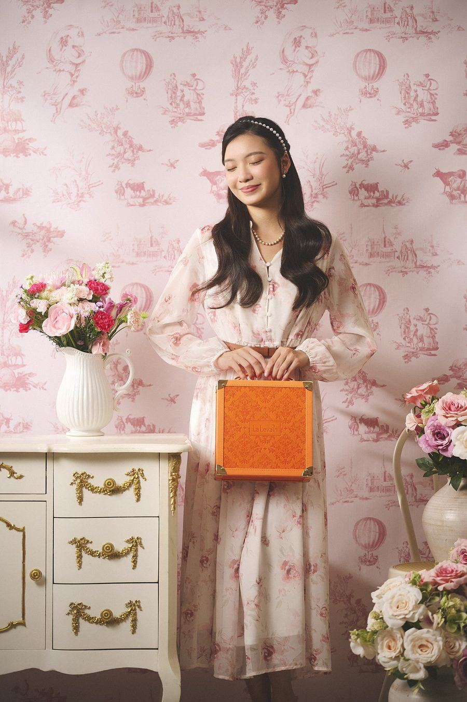
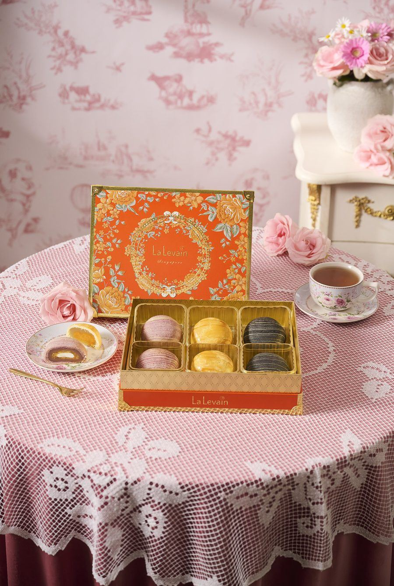
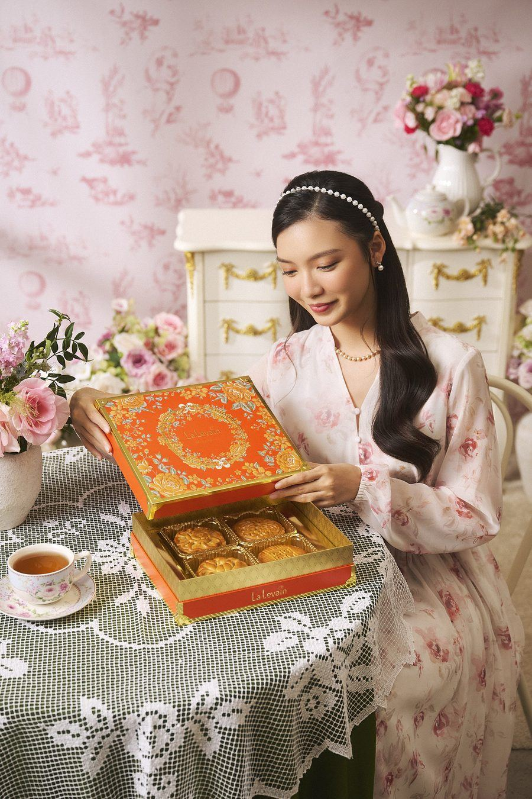
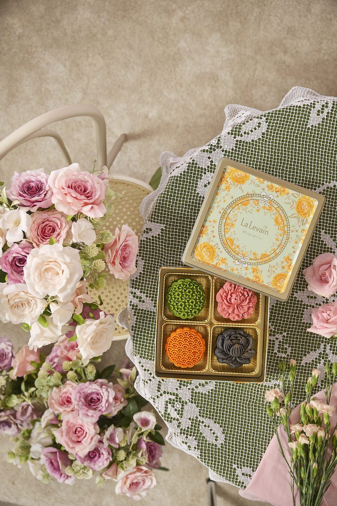
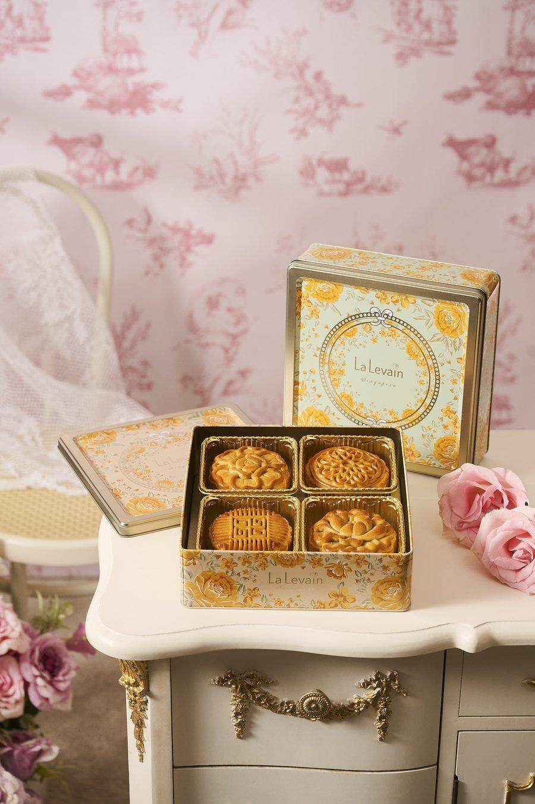
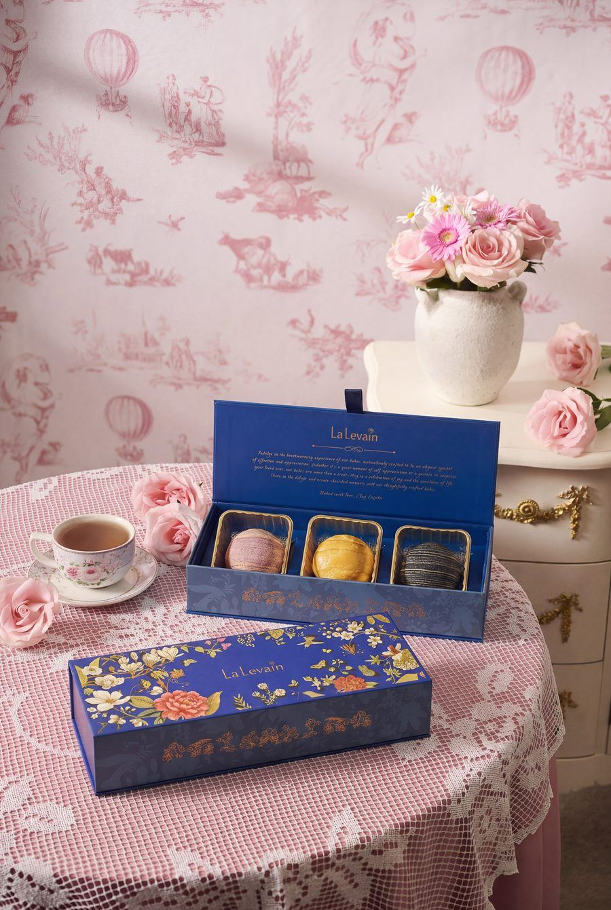
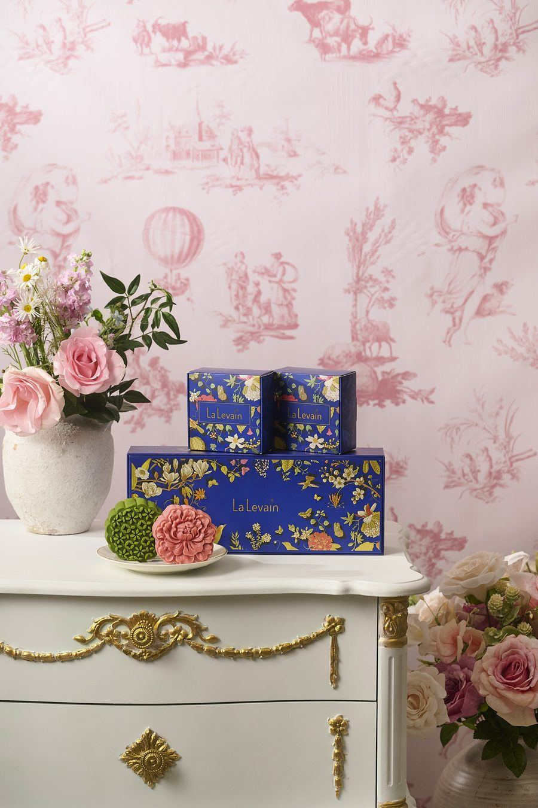

Global inspirations. Unforgettable flavours. Made in Singapore.
The thinking, the ingredients and the craft behind every flavour this Mid-Autumn.
Our approach
Global ingredients, local heart. We bring in the world's finest, from Uji matcha to French butter, and pair them with the flavours Singapore grew up loving. Everything's cooked in-house, and because Chef Wythe is a food researcher who studies food sciences, every flavour is balanced with real precision.
Global ingredients, local flavoursCooked in-houseBalanced by food scienceNatural colouring only
The brand story
La Levain invites you to experience mooncakes like never before. Every artisan mooncake is made in our own kitchen in Singapore with premium ingredients, and carries Chef Wythe's bold creativity and deliberate, meticulous craftsmanship. When regular yuzu proved too weak against Uji matcha, it became Valrhona yuzu chocolate. That's the standard we hold every flavour to.
Made in Singapore
Everything is made in our own kitchen here in Singapore, never outsourced. Global inspirations, cooked at home.
Sourced from around the world
We bring in the finest ingredients from around the globe. Uji matcha, Valrhona chocolate, Illy coffee, Elle & Vire butter, Hokkaido milk. Every bite should be an exquisite experience.
Made with health in mind
Deliberate choices, not accidents. Our Momoyama skin is lower in sugar, and our Teochew mooncakes are baked, never deep fried, so they're less oily than the traditional way.
Hand-formed, one by one
These are a labour of love. Each mooncake is shaped by hand, and that intricate manual craftsmanship is what makes every piece one of a kind.
No one misses out
Vegetarian friendly options are available, so everyone at the table gets to celebrate.
The box matches what's inside
The elegant packaging reflects the premium quality of the mooncakes it holds, and adds an extra touch of sophistication to the gift.
Our traditional Cantonese mooncakes keep to the classics. A dense, fragrant lotus paste made the old way with peanut oil, and flavours we've chosen to respect rather than reinvent. Where we make the difference is in the quality of what goes in, like aged Xinhui chenpi and culinary-grade matcha. A few of these we leave entirely untouched, exactly as they should be.
Flavour 1
Red Bean with Mandarin Peel & Matcha Lotus
Two pastes in one mooncake. Red bean is slow-cooked together with mandarin peel until it turns deeply fragrant, alongside matcha folded through lotus paste.
Red bean paste is cooked together with the mandarin peel.
The longer it cooks, the more fragrant it becomes.
We use aged Xinhui chenpi (新会陈皮), at least five years old. Xinhui peel is the most prized of all mandarin peel, and the older it gets the more precious it becomes. There's a well-known Cantonese saying that good aged chenpi is worth its weight in gold.
Alongside it, culinary grade matcha is cooked into smooth lotus paste.
Inspired by Chef Wythe's favourite sweet, the Italian lemon candy. Because a mooncake is already sweet on its own, he added lemon peel to lift and balance it.
Lemon peel lifts the sweetness so every bite finishes clean.
When La Levain started making mooncakes, we wanted a range that showed off the brand's modern, fusion character, so we chose to work with Momoyama skin. Momoyama lets the skin take on colour from natural ingredients, instead of the baked brown skin you find on traditional mooncakes. It is also lower in sugar. For 2026 the range welcomes two new flavours: Chocolate Lotus with Pistachio Crunch, and Mixed Berry Lotus with Raspberry Rose.
Flavour 1
Pure White Lotus with Salted Egg Yolk
The classic, traditional flavour, presented in La Levain's Momoyama skin.
Uji Matcha White Lotus with Valrhona Yuzu Chocolate
A pairing of complementary Japanese flavours that balance each other perfectly. The bright, zesty tartness of yuzu cuts through the rich, earthy, umami bitterness of green tea, for a refreshing and multi-dimensional flavour.
Ceremonial-grade Uji matcha powder is used to make the mooncake skin.
The paste is culinary-grade matcha lotus paste.
Chef Wythe first experimented with regular yuzu, but the flavour didn't come through as strongly as he wanted, so he chose Valrhona yuzu chocolate instead.
Choosing Valrhona also reflects a real side of La Levain. We're used to working with French chocolate, and Valrhona yuzu is known for its high quality flavour. It lets the matcha come through while making the yuzu more pronounced.
Weight: 185gNon-Halal
Ingredients: Matcha Lotus Paste, Maruchi Dough, Grapefruit Filling, White Lotus Paste, Valrhona Yuzu Inspiration, Matcha Powder, Green Colouring.
Flavour 3New for 2026
Chocolate Lotus with Pistachio Crunch
Inspired by the famous, viral pistachio kunafa creations, rebuilt so it keeps well in a mooncake.
Chef first tried making it with kunafa, but found the kunafa would turn rancid, so he broke it down and used pistachio paste with pistachio nut instead, with pistachios sourced from around the world.
It is paired with chocolate lotus paste made using Belgian chocolate.
Belgian chocolate is chosen because its taste profile pairs beautifully with lotus paste.
Weight: 185gNon-Halal
Ingredients: Chocolate Lotus Paste, Maruchi Dough, White Lotus Paste, Caravels Crunch Pistachio, Roasted Pistachio Paste, Black Colouring.
Flavour 4New for 2026
Mixed Berry Lotus with Raspberry Rose
This year's concept carries floral elements, so Chef Wythe wanted to experiment with a floral flavour. The flower he chose was rose. Mooncakes are usually sweet, and Chef leans towards sour profiles and raspberry, so he paired the rose with freeze-dried raspberry.
The floral note chosen was rose.
He paired the rose paste with freeze-dried raspberry for a sour lift.
Raspberry rose paste carries the rose flavour.
The mixed-berry lotus paste is blended with mixed berries (strawberry, blueberry, mulberry, raspberry and others).
The mini range is made for the new generation. It lets them enjoy mooncakes without committing to a big appetite, which is ideal for first-timers and newcomers. Full-size mooncakes can be hard for this generation to finish, so smaller is better for eating, sharing and gifting. Mooncakes today carry a lot of modern influence, and at La Levain we always look at what people want, what they like and which flavours are popular, so we can create something suited to this generation. It is also a way for us to express our creativity and experiment with interesting flavour combinations.
Flavour 1
Mango Pomelo with Grapefruit
Built around mango pomelo, one of Singapore's favourite desserts, with an abundance of mango and pomelo flavour.
The base is a mango pomelo lotus paste, made with Aiwen mango from Taiwan, the most popular mango in Taiwan, also known as Irwin or apple mango.
The pomelo is candied pomelo zest.
Chef found it not quite sour enough on its own, so he added grapefruit paste with candied grapefruit for more edge, plus dried mango chunks.
The most complicated, and most special, flavour of the range. La Levain has experimented with many tea-flavoured mooncakes over the years and it has always been challenging, but this year the combination finally worked. The taste is balanced at last, not too sour from the peach and not bitter from the tea.
Two types of lotus paste are used to show the distinct colours: oolong tea lotus paste, and an oolong-and-jasmine tea lotus paste.
Chef Wythe has always wanted to make a lava-series mooncake, and this year he decided to try it with coffee. Illy was chosen because it showcases the La Levain spirit and our fusion values.
Usually, lotus paste with coffee ends up tasting very similar to Singapore coffee candy.
To bring out a different taste, 100% Arabica bean powder from Illy was used.
The coffee lava centre is also made with Illy coffee.
Our Teochew mooncakes are baked, not fried the way they are made traditionally, which keeps them less oily.
They are the most labour-intensive mooncakes we make. The crust takes many careful folds and a great deal of shaping, all done in a temperature-controlled environment so the butter never melts along the way. The butter has to stay firm, because that is what gives the layers their flaky, never brittle texture. It calls for precise measurements, speed and a lot of handwork, which is the reason not many brands make them.
For the crust we use Elle & Vire butter, a French butter churned slowly in Normandy by master butter-makers, the benchmark that chefs the world over reach for, prized for its rich, creamy texture.
Flavour 1
Teochew Salted Egg
The traditional flavour, in a Teochew skin.
The salted egg is more fragrant than in previous editions, with its richness elevated.
We poured care and attention into every detail of our packaging, from the design to the selection of the materials. Each piece is made to be held, and is best experienced through touch.


Say it: lah MAHL
La Malle · Travel Trunk
Our signature trunk, for gifts that go places. Inspired by the great French travelling trunks, a handled case built for the journey. The most generous of the formats, and the one that never needs a gift bag.
Holds the Momoyama (4pc), Traditional (4pc) and Assorted (4pc) sets.


Say it: lay-KRAN
L'Écrin · Keepsake Box
A jewel-box for the season's finest. "Écrin" is what the French call the case that holds jewellery, and that's how we treat what goes inside. A rigid presentation box with a lift-away lid.
Holds the Momoyama (4pc) and Teochew (6pc) sets.


Say it: luh koh-FRAY
Le Coffret · Collector's Tin
One for the collection. A decorative metal tin in this season's house print, made to outlast the mooncakes inside. After the festival it finds a second life, for tea, for trinkets, for next year's anticipation.
Holds the Momoyama (4pc), Traditional (4pc), Assorted (4pc) and Mini Momoyama (8pc) sets.


Half Box · Say it: lay-TWEE mah-REEN
L'Étui Marine · Keepsake Box
The French keep a slim case for a single treasure, a pen, a pair of spectacles, a watch. They call it an étui. Ours holds our flaky Teochew mooncakes in a slender box that slips into a tote as easily as it sits on a desk.
Holds the Teochew (3pc) set, in the navy floral print.
We use a different lotus paste for each type of mooncake. The traditional range keeps its traditions, while the Momoyama range was free to experiment.
Traditional Cantonese
A very traditional lotus paste. Dense, and fragrant from peanut oil.
Momoyama Cantonese
A modernised paste that lets us redefine what a mooncake can be. It is cooked together with lotus plumule, which gives it an earthy, floral note and lets us use less peanut oil.
Lotus plumule (Lian Zi Xin / 莲子心)
The tiny green embryo found inside the lotus seed, known for its intensely bitter taste. It is traditionally used in Chinese medicine to calm the mind, clear excess heat from the body and promote restful sleep. It carries the natural, pure taste and fragrance of lotus and needs less peanut oil than traditional paste, giving an earthy, floral note. Paired with mooncakes, which are usually sweet, it sits beautifully and keeps them from being too sweet.
Storage & shelf life
How to keep every mooncake at its best, and how to bring the Teochew crust back to full flakiness.
Flaky Teochew Mooncakes
Shelf life: 1 month
Keep in a cool and dry place, away from heat and direct sunlight, in ambient temperature. Heat up in a pre-heated oven at 160°C for 5 to 8 minutes for optimal flakiness and texture.
OR
Keep in the freezer at -12°C within 1 day of receiving, for up to 21 days. Heat up in a pre-heated oven at 160°C for 8 to 10 minutes for optimal flakiness and texture.
Momoyama & Traditional Mooncakes
Shelf life: 3 months
Keep in a cool and dry place, away from heat and direct sunlight, in ambient temperature.